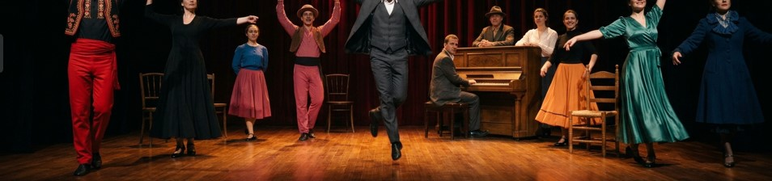
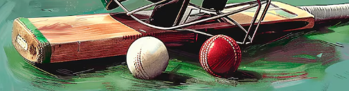
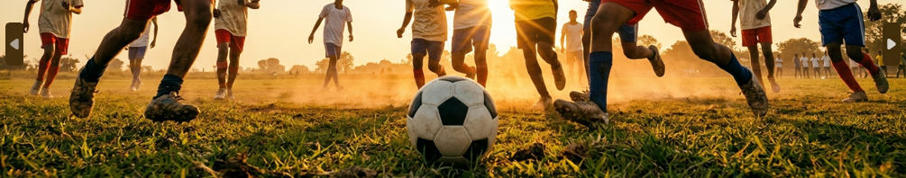

Technology and Innovation Club
Explore programming, artificial intelligence, robotics, and modern technologies through workshops and practical projects.
Contact: Technical Club Coordinator
Discover your interests, explore new opportunities, and become part of our university community.
Explore programming, artificial intelligence, robotics, and modern technologies through workshops and practical projects.
Contact: Technical Club Coordinator
Improve your programming skills, participate in coding competitions, and collaborate with fellow students on software projects.
Contact: Programming Society Coordinator
Express your creativity through painting, photography, graphic design, and other artistic activities.
Contact: Arts Society Coordinator

Discover your talent in acting, theatre, music, and stage performances while developing confidence and communication skills.
Contact: Drama Club Coordinator

Participate in cricket practice sessions, university tournaments, and friendly matches while developing teamwork and sportsmanship.
Contact: Cricket Club Coordinator

Join fellow football enthusiasts, improve your skills, and represent the university in sports competitions.
Contact: Football Club Coordinator
Take part in volunteer activities, charity campaigns, and community support initiatives to make a positive difference.
Contact: Welfare Society Coordinator
Promote environmental awareness through tree plantation drives, cleanliness campaigns, and sustainability activities.
Contact: Environmental Club Coordinator